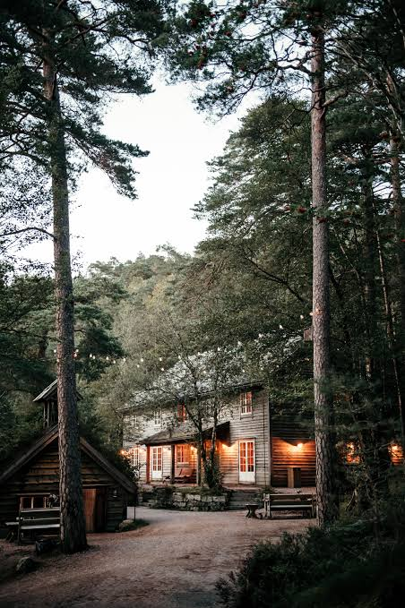
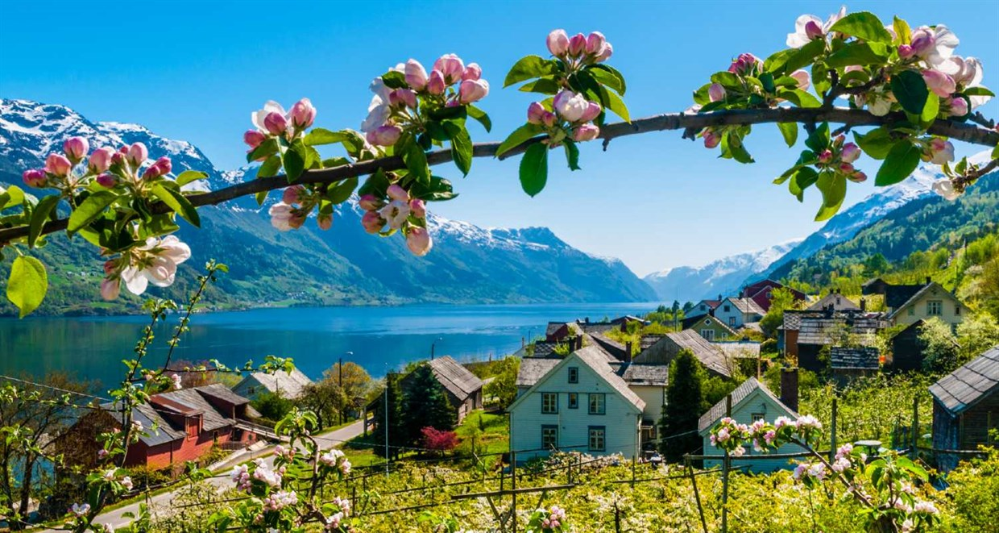

Praktisk informasjon
Alt dere trenger for å komme dere til Hardingasete og trives der.
Komme dit
Adresse: Hardingasete, [vegnavn og nummer], [postnummer og sted]
Fra Bergen tar det rundt [x] timer med bil. Kjør [rute], og ta av ved [stikkord]. Det siste stykket er smalt, så kjør rolig.
Kommer dere uten bil, går det buss fra [sted] til [sted]. Si fra til oss, så finner vi skyss det siste stykket.
Det er gratis parkering på tunet.
Åpne veibeskrivelse i kartTider
Fredag: hyttene er klare fra kl. [15:00]
Lørdag: vielsen starter kl. [14:00]
Søndag: hyttene skal være tomme kl. [12:00]
Hele helgen, time for time, står i programmet.
Hardingasete og hyttene


Hardingasete er et gammelt gårdstun i Hardanger. Her skal vi feire, spise og bo hele helgen.
Hyttene ligger rundt tunet. Dere leier en seng for hele helgen, fra fredag til søndag. Sengetøy og håndklær [er med / må tas med].
Det er stamper og badstue på tunet, som alle kan bruke.
Området rundt

Rundt Hardingasete er det fjord, frukthager og fjell. Kommer dere tidlig, er det fine turer i nærheten, blant annet [turmål].
Antrekk
Lørdag: [pent / dress og kjole]. Vielsen er ute, så ta med noe varmt.
Fredag og søndag: det dere trives i.
Husregler
Det er et barnefritt bryllup.
Vi ønsker at dere legger bort mobilen under vielsen og middagen, så vi er til stede sammen. Vi har fotograf.
Ta med
- Gode sko til tur
- Badetøy til stampen
- Treningstøy hvis du vil være med på yoga
- Varme klær til kvelden